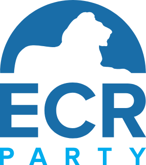

REDE & AUFTRITT
Reinhold Regen
Grundsatzrede
Eine längere Grundsatzrede über Freiheit, Verantwortung und die politische Aufgabe einer selbstbewussten Nation.
Reden, Interviews und öffentliche Auftritte der Parteiführung.
Eine längere Grundsatzrede über Freiheit, Verantwortung und die politische Aufgabe einer selbstbewussten Nation.
Gush über politische Führung, Verantwortung und die Verpflichtungen einer freien Gesellschaft.
Romney über wirtschaftliche Erneuerung, Regierungshandwerk und den Anspruch, politische Ziele in Ergebnisse zu übersetzen.
Das Republikanische Bündnis arbeitet auf europäischer Ebene mit konservativen und reformorientierten Partnern der ECR zusammen.
